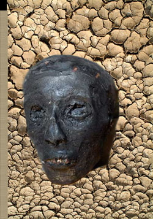
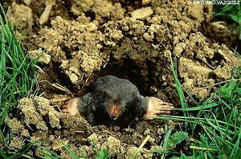
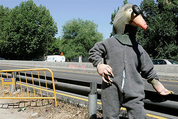
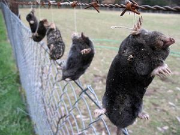

Suelo
 De: La Frikipedia, la enciclopedia extremadamente seria.
De: La Frikipedia, la enciclopedia extremadamente seria.
 Esto es lo que se encuentra en un suelo normal
 Hombre topo planeando la conquista
 Explorador topo reconociendo el terreno
 Miembros de una organización terrorista de topos capturados y castrados
El suelo es todo aquello que está debajo de tus pies, a excepción de los hongos. El suelo es un revoltijo que se compone de restos orgánicos y suciedad. Entre los componentes orgánicos se encuentran mierda, los restos de tu perro y tu abuela muerta. Entre los componentes sucios tenemos tierra, basura y gitanos.
La función del suelo es ser duro y tener piedras para que nos caigamos y nos hagamos daño.
La utilidad que el hombre le ha encontrado al suelo es que este es el único lugar donde se agarra la marijuana
La creación
En un principio no existia el suelo. Esto era muy problemático ya que siempre estabamos cayendo, por lo que no podíamos beber, mear, ni masturbarnos tranquilamente sin que el fluido se fuera directamente hacia nuestra cara.
Un día que Dios ya se aburría de ver siempre a la gente cayendo, se le ocurrió crear el suelo, y entonces se hizo el suelo. Todas las personas que estaban cayendo se mataron del golpe que se metieron contra el suelo(excepto los aztecas ¡que podían volar!. Pero Dios dijo "Os jodeis" y todos se cayeron y murieron). Momentos antes de morir un individuo cualquiera pensó "¡Me cago en Dios!". Curiosamente un individuo idiota EMO lo último que pensó fue "Gracias a Dios".
Cuando el sadomasoquista de Dios se cansó de masturbarse pensando en ese momento decidió resucitar a todo el mundo y borrarles la memoria con las bolas de dragón (¿Cómo creíais que llego a ser Dios? Tiene cajas llenas de ellas).
Después de todo este rollo Dios no se dedicó a descansar, sino que se puso a trabajar en serio una vez en su "vida" para crear sustancias con las que mejorar el suelo.
¿Que le salió a Dios de los huevos/ovarios poner en el suelo?
Dios en su insaciable sed de sadomasoquismo decidió crear múltiples objetos y elementos que hacen al suelo más peligroso y divertido de lo que ya es. Dejo aquí una lista de las cosas favoritas de Dios:
- Piedras: La creación favorita de Dios. Este instrumento tiene la única y simple tarea de ser dura, grande, pesada y estar siempre en medio para que te caigas y te des un cabezazo contra el suelo. Las piedras siguen la frase de Maquiavelo "El fin justifica los medios" y no se detienen ante nada. Se dice que es de tontos tropezar dos veces con la misma piedra, hacerlo tres es de javi.
- Hielo: Fue una obra maestra de Dios. El hielo es agua endurecida con polvos mágicos. Este elemento mágico, que le encanta a los frikis que juegan al WoW como magos, tiene unos atributos que le hacen a la vez duro y resbaladizo, pura brujería como el fuego.
- Barro: Debido al origen del barro la iglesia ocultó su composición hasta que un servidor lo descubrió. El barro es una sustancia de origen divino creado un día que Dios se metió demasiadas lavativas por sus anos al haber perdido una apuesta contra chuck. Desde ese momento el barro ha sido el juguete favorito de los niños, que se vuelven masoquistas nada mas verlo porque después en su casa les espera leña de su madre (y lo saben los jodios).
- Caca de perro: Dios creo este elemento de la tabla periódica por petición de las industrias que hacen zapatos. Su finalidad es ponerse en mitad de nuestro camino mientras no miramos (por si no lo sabíais se mueven y son masoquistas) para ser pisadas. Una vez aplastadas el daño está hecho y nos tenemos que comprar unos zapatos nuevos (o vivir con el pestazo para siempre). Hace un tiempo se creó el mito de que pisar una mierda trae buena suerte, esto es mentira, fue una falacia (con menos sentido que la Tierra gira alrededor del Sol) creada por las empresas de zapatos para aumentar las ventas (y aumentaron...). Si no crees lo aquí leído alla tú, sigue haciendo caso a tus amigos.
- Pieles de plátanos: En un principio las pieles de plátano fueron un error de Dios(como los limones) en el intento de crear a los chinos. Dios que es un cochino tiró las pieles de plátanos sobre la Tierra para ensuciarla más aun, pero, se dió cuenta de que la gente resbalaba con ellas. Después de hacerse unas "pocas" pajas viendo el espectáculo Dios decidió seguir fabricando las pieles.
- Pulidor de suelos: Es un invento de Dios al que humanos
cabrones como abogados y banqueros compraron la patente. Los primeros hicieron esto para que la gente al entrar en el banquete de abogados se resbalara y se partiera la columna, asi los abogados ganarían un dinerillo por la denuncia al que se encarga de la limpieza. Los banqueros ¡ya tendrán su motivo! ellos nunca pierden.
Horizontes
Los horizontes son las diferentes capas en las que se agrupa la porquería que compone el suelo. Se pueden diferenciar 4 horizontes:
- Horizonte A o zona donde se entierra todo bicho que la guiñó: Es el más superficial y en el se entierran todos los seres que estiran la pata y algunos que no. Su color es generalmente oscuro por la abundancia de excrementos y de gitanos que esta contiene.
- Horizonte B o zona racista: Carece prácticamente de gitanos por lo que su color es mas claro. En el se depositan los materiales arrastrados desde arriba, principalmente mierda.
- Horizonte C o ¡Por debajo del suelo Kakashi!: Esta es la capa por donde aparecen los ninjas cuando utilizan sus técnicas de tierra. Normalmente
los muy maricas estos homosexuales intentan sorprender al enemigo para agarrarle el paquete, pero el otro se lo huele de lejos y le esquiva o le deja un clon con una vagina.
- Horizonte Do hábitat de los hombres topos: Es una estancia hueca rodeada por una muralla rocosa donde habitan los hombres topos y Hitler. Sólo Homer Simpson ha conseguido entrar alli y salir con vida. Todo el mundo sabe que ese submundo existe pero "las autoridades" pretenden ocultar la verdad diciendo que es una fábrica subterránea de helados, pero no tiene sentido porque el helado de chocolate no crece en terreno pedregoso.
Ver también
- Techos — El antónimo de los suelos
Autor(es):
- Nexo
- El Sevillano
- Armagedon19-7-12
- Dark temptation
- AlexMetralla
- Tokyo Mew Mew.
- Generibot
- Palomacontrayerbasporjuancuesta
Frikipedia 2005-2016, Licencia
GFDL 1.2 - Extraído por FrikiLeaks